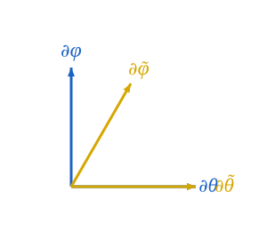

The two charts on S2 describe the same surface. A vector or a function at a point has a single intrinsic identity; what changes between charts is the components. This page sets up the bookkeeping.
The Jacobian
Between the two charts the transition is
θ~=θ,φ~=φ+αcosθ,
with inverse
θ=θ~,φ=φ~−αcosθ~.
The Jacobians are
J=∂(θ,φ)∂(θ~,φ~)=(1−αsinθ01),J−1=∂(θ~,φ~)∂(θ,φ)=(1αsinθ~01).
Both have determinant 1. (The shear is volume-preserving.)
Basis vectors transform with J−1
A coordinate basis vector ∂μ~ at a point is the derivation ∂/∂x~μ. By the chain rule applied to any smooth function f:
∂θ~f=∂θ~∂θ∂θf+∂θ~∂φ∂φf=∂θf+αsinθ~∂φf.
So
∂θ~=∂θ+αsinθ~∂φ,∂φ~=∂φ,
matching what the previous page derived by differentiating the embedded parametrization.
In matrix form, with column vectors of basis elements:
(∂θ~∂φ~)=J−1(∂θ∂φ).
The basis transforms with the inverse Jacobian. This is the defining property of a covariant index — moving with the basis, opposite to how vector components move.

Components transform with J
A tangent vector v has components vμ in the standard chart and v~μ~ in the skew chart. The intrinsic identity
v=vθ∂θ+vφ∂φ=v~θ~∂θ~+v~φ~∂φ~
combined with the basis transformation above gives
v~θ~=vθ,v~φ~=vφ−αsinθvθ,
or in matrix form v~=Jv. Vector components transform with J, opposite to the basis — this is the contravariant transformation rule, and the reason vector indices are written up.
A covector ω pairs against v to give a chart-independent number ω(v)=ωμvμ. For that pairing to be invariant under chart change, the covector components must transform with J−1:
ω~θ~=ωθ+αsinθωφ,ω~φ~=ωφ.
This is the covariant rule — index down.
A worked pairing
Take the function f(p)=Z(p)=cosθ(p) (the embedded Z-coordinate). Its differential is the covector df, with standard-chart components
df=−sinθdθ+0⋅dφ,soωθ=−sinθ,ωφ=0.
In the skew chart, applying the transformation rule:
ω~θ~=−sinθ~+αsinθ~⋅0=−sinθ~,ω~φ~=0.
Same components — because θ~=θ and f depends only on θ. Sanity check.
Now take the vector v=∂φ (rotation around the Z-axis). Its standard components are (vθ,vφ)=(0,1). Skew components:
v~θ~=0,v~φ~=1−αsinθ⋅0=1.
Identical again, because ∂φ=∂φ~ in our shear.
For a less trivial example, take w=∂θ (motion along a meridian). Standard components (1,0), skew components
w~θ~=1,w~φ~=0−αsinθ⋅1=−αsinθ.
Now the skew chart sees a non-zero φ~-component. Yet the pairing df(w) is the same in both:
df(w)=ωθwθ+ωφwφ=(−sinθ)(1)+0=−sinθ,
df(w)=ω~θ~w~θ~+ω~φ~w~φ~=(−sinθ~)(1)+0⋅(−αsinθ~)=−sinθ~.
The components changed; the number didn’t.
What’s intrinsic, what’s not
A summary of which quantities are intrinsic (chart-independent) and which depend on the chart:
| Quantity |
Intrinsic? |
| The vector v∈TpM |
Yes |
| The covector ω∈Tp∗M |
Yes |
| Components vμ |
No — chart-dependent |
| Components ωμ |
No — chart-dependent |
| Pairing ω(v)=ωμvμ |
Yes |
| Coordinate basis ∂μ at a point |
No — chart-dependent |
| Dual coordinate basis dxμ at a point |
No — chart-dependent |
| Lengths, angles (when a metric is fixed) |
Yes |
| Christoffel symbols Γρμν |
No — not even tensorial |
The tensor calculus of the next four sections is largely a story about consistently keeping the intrinsic objects in view while computing with their chart-dependent components.